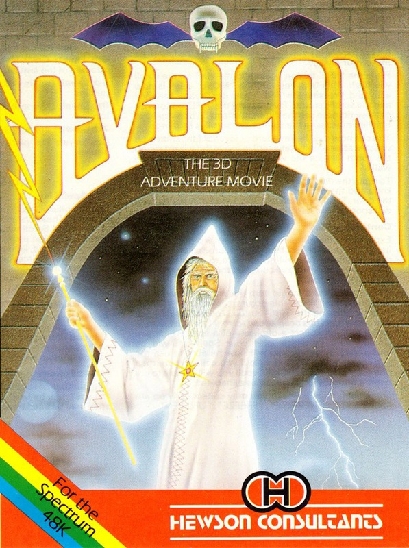
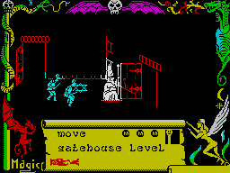

The Legend of Avalon


{kind=link}

| Publisher: | Hewson Consultants |
| Price: | £7.95 |
| Year: | 1984 |
| Source: | CRASH, Issue 10 |

‘Congratulations’, says the inlay, ‘You are now the proud owner of Avalon, the first in a new world of computer games, the Adventure Movie.’
It’s likely that in the next few months the words ADVENTURE MOVIE are going to become familiar. It hasn’t happened overnight, of course, there has been a slow progression towards the interactive adventure which uses arcade style graphics (starting perhaps with games like Atic Atac) and which progress is now accelerating. History will dictate who is first, but Hewson have certainly made a head start with Avalon.
The packaging is small video box style with a large inlay containing columns of apparently daunting text. In fact the game turns out to be one of those you can dive into immediately, but reading the instructions would serve a useful purpose as this is, primarily, an adventure and few things are instantly obvious. Also included is an explorer’s map of the Avalon complex and a protection entry code with very pale blue ink on slightly paler paper to make it hard for photocopiers. It asks you to type in three separate codes before accepting access.

You play Maroc (the wizard) or rather his astral projection. There are sixteen ranks (skills) which are subdivided into eight stages, and at the start of a new game your status is the lowest, that of apprentice. Your advancement is gained by penetrating deeper into the dungeons and by collecting spells.
Maroc’s task, to put it simply, is to destroy the Lord of Chaos, who dwells in the deepest part of the dungeons protected by several types of horror. These include goblin warriors, who gang up on you and can only be avoided by running quickly through two rooms or down a tunnel; wraiths who throw fire balls at you after a while and tend to follow your progress by materialising through walls; guardians of chaos, and finally warlocks, who may be helpful and may not, depending on what you can offer them.
To help in this enormous task there are many spells and useful objects to be found, some are collected just by walking over them, but others may need the help of a servant (one of the early spells to be found), who can do the task for you. Movement itself is a spell, since Maroc is only an astral projection, and this is given to you at the start of the game. Collected spells are listed in a continuous scroll at the base of the screen and are selected by using the up-down control and fire. Some spells can be used simultaneously such as ‘move’ and ‘unseen’. A useful one is ‘freeze’, which stops time for a few moments and can let you get away from things like the goblin warriors. Here, an arcade skill comes in — the ability to get out of the freeze spell and into ‘move’ as fast as possible!
All the rooms have some doors which may be open, closed or locked. The locked ones obviously require keys. Closed ones are operated by taking Maroc to the door at the correct height and nudging it, moving back slightly to let it open before proceeding through it. They shut just as easily.
Because of its arcade overtones Avalon is reviewed here as an arcade game rather than by Derek Brewster but no doubt Derek will also have something to say on the subject at a later date.
CRITICISM
‘This is the best thing I’ve seen in arcade/adventures with the mystic qualities of adventures and the graphics of arcade. Avalon is the best blend between the two yet. The 3D effect is excellent (though a little jerky, but who cares when it is this good)? Overall, there is a lot to do in the game which means that interest will be held. I would personally recommend that a map be drawn to aid progress as I soon became lost without one. I think Hewson have produced a likely adventure cult game.’
‘What makes Avalon a real interactive game is the fact that as you play it, you really alter the state of things with each ‘life’. The spells you managed to collect last time are still with you, chests opened are still open, and as you carry on failing, more goblins and then guardians appear from the depths as though alerted to your presence. So the only way to go about it is to use the first few attempts as a practice mode until you get the hang of opening doors proficiently and using spells. And the further you get into the game, more you realise that this isn’t really an arcade game at all although some skills are needed, because you really can affect the way things happen to you. There are so many neat touches, most of which only appear with long play. Once I waited in the start room and a wraith appeared. The first fireball he threw was not at me but at the door — he shut it! With so much budget software around it seems to be harder to award value for money to a game costing £8, but Avalon is worth every penny in my book — no game like this could be developed at a cheap price.’
‘Avalon is a game that never ends. If you sink to the lowest level, it still keeps going and you are forced to live with the effects of what you have done on previous attempts. In this sense there is every chance of picking yourself up again and continuing to get better. Useful, therefore to have the SAVE and LOAD facility. The 3D graphics are most effective, although at first it can be disorienting to go up through a door and emerge in the next room sideways. This reorientation also means a map is pretty essential — there is a freeze key. I like the use of the joystick driven control which does both for movement and for spell selection, and life can get very panicky when there are three goblins and a wraith chasing you and you want to use spells and move. Highly addictive, extremely playable and a game to keep the attention for ages. Avalon is going to take a lot to master and, with as far as I have got, looks like having much more to it than even Atic Atac. It’s got great music as well — pity there’s not more of it!’
COMMENTS
| Control keys: | A to G = up, Z to V = down, B, N = left, M, SYM SHIFT = right, H, J, K, L = fire |
| Joystick: | Kempston, Sinclair, AGF, Protek |
| Keyboard play: | Several options and positive response |
| Use of colour: | Borders very colourful, the playing area is quite simple and avoids messy attribute problems |
| Graphics: | Excellent 3D effect and well drawn and detailed characters |
| Sound: | Good start tune, otherwise useful sounds as warnings |
| Skill levels: | Not applicable |
| Lives: | Not applicable |
| Screens: | Over 200 rooms |
| General rating: | Excellent. |
| Use of computer: | 89% |
| Graphics: | 94% |
| Playability: | 91% |
| Getting started: | 90% |
| Addictive qualities: | 93% |
| Value for money: | 90% |
| Overall: | 91% |